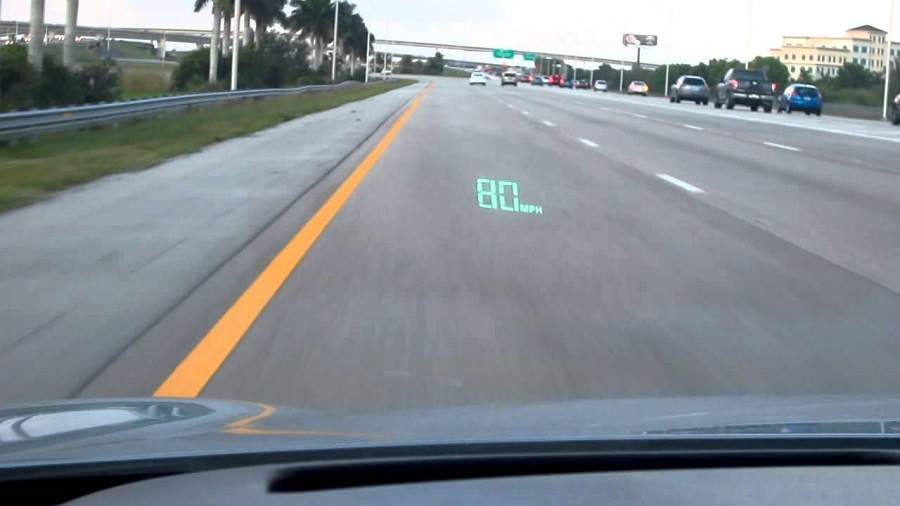

L'épée de Damoclès par Ivan Sutherland (1968)
Histoire
Ivan Sutherland est un ingénieur en informatique américain né en 1938 et est célèbre grâce à ses différentes inventions révolutionnaires et l'épée de Damoclès en est une.
Photo de l'Epee de Damocles
L'Epee de Damoclès est un dispositif que de nombreux experts considèrent aujourd'hui comme l’ancêtre des visiocasques et autres casques de réalité virtuelle et augmentée, c'est donc entre autres le précurseur de la réalité augmentée. En effet, sa création a permis de nombreuses avancées technologiques.
Comment cela fonctionne ?
Il se composait de deux tubes cathodiques qui ont permis aux utilisateurs de voir des images superposées sur le monde qui les entoure La grande caractéristique de ce dispositif réside dans la détection de mouvement dont des capteurs sont intégrés au casques l’un mécanique et l’autre ultrasonique) qui sont utilisés pour mesurer la position de la tête et modifier l’image en fonction du mouvement de la tête de l’utilisateur. Cependant, à cause de son poids, ce casque devait être soutenu par un bras mécanique qui empêchait l'utilisateur de bouger librement. En effet, il était suspendu au plafond en dessus de la tête. D'après son créateur, il explique comment le dispositif fonctionne : « L’idée fondamentale derrière ce dispositif en trois dimensions est de proposer à l’utilisateur une image en perspective qui se modifie lorsqu’il bouge. L’image doit se modifier exactement de la même manière que se transforme l’image d’un objet réel lorsque l’utilisateur bouge sa tête »Schéma explicatif de l'Epée de Damoclès
Les étapes du fonctionnement du dispositif sont :
- Le dispositif de mesure de la position de la tête alimente un ordinateur
- L'ordinateur a envoyé les informations à un multiplicateur matriciel qui était responsable de la transformation de rotation
- L'information a ensuite été transmise à un dispositif de détourage qui a effectué la transformation de perspective
- Enfin, les informations sont allées à un pilote d'affichage analogique qui a ensuite affiché les informations sur le casque à tube cathodique
Ordinateur PDP-1
Ses caractéristiques techniques sont :
- Processeur 18 bits
- Mémoire : 4096 mots de 18 bits
- Entrée sortie de données : écran / clavier / cartes perforées
- Options : stylo optique, écran haute résolution, bandes magnétiques
- Logiciels fournis : Editeur, Assembleur et Debuggeur
- Prix : 120000 $
Le Système HUD (années 1980)
Définition
Un afficheur tête haute, ou HUD (head up display), est un système permettant d’afficher quelques informations à travers un écran transparent. Au début, cette technologie apparaît dans les cockpits d'avions puis dans les tableaux de bords des voitures et ainsi de suite. En effet, le système HUD provient tout d'abord de l'aviation militaire puisque cela permet au pilote de surveiller son environnement en même temps que des informations fournies par ses instruments de bord. Dans les véhicules, le système HUD permet de projeter sur le pare brise d’un véhicule des informations importantes liées à la conduite. Le conducteur peut personnaliser son affichage à sa guise, en ne gardant que ce dont il a besoin. En effet, cet affichage permet notamment de ne pas quitter la route des yeux quand l’automobiliste souhaite consulter des informations relatives à la conduite. Effectivement, l’HUD projette les informations nécessaires dans son champ de vision, généralement en bas, pour ne pas trop le gêner. En 1988, le système HUD apparaît dans le monde de l'automobile. En effet, General Motors avait décidé d’équiper la Pontiac Grand Prix d’un afficheur à tête haute de série. D’ailleurs, ce fut le premier constructeur automobile à utiliser cette technologie même si à l'époque, ce système n'était pas trop pratique. 
Utilisation du système HUD dans la Pontiac Grand Prix
Comment cela fonctionne ?
Afin de transmettre les informations fournies par l’ordinateur de bord de la voiture à la vision du conducteur, on utilise généralement un petit projecteur. Ce dernier va afficher les informations numérisées au préalable sur un ou plusieurs miroirs semi-transparents ou directement sur le pare brise du véhicule. Les miroirs semi-réfléchissants vont servir à projeter les images vers le conducteur. Ce dernier verra donc les informations devant lui, flottant dans les airs et situées à plusieurs mètres devant lui afin que le conducteur soit le seul à voir ces informations Cependant, les constructeurs ont choisi de restreindre le nombre d’informations sur l’affichage et ce dernier ne dépasse pas la taille d’une feuille A5, soit 14cm x 21cm, afin d'optimiser la place et d'afficher les informations les plus utiles.
Schéma d'utilisation du système HUD simplifié
Autres exemples d'utilisation du système HUD
Les jeux-vidéos
Dans les jeux-vidéos, le système HUD est un mécanisme essentiel, fournissant des informations importantes directement sur l'écran et renseignant le joueur sur l'environnement : score, niveau, santé de son personnage, arme utilisée, nombre de munitions restantes etc ... Les HUD se trouvaient, à l'origine, sur les jeux qui mettaient le joueur dans la peau d'une personne (jeu en vue subjective) ou au pilotage d'un véhicule (avion, vaisseau spatial, voiture, moto, bot de combat, bateau, sous-marin...). Dans la majorité des jeux, le HUD peut être desactivé via les options afin de ne pas être dérangé par les informations mais cela est déconseillé
Le Eyetap
Le Eyetap était au début une sorte de casque permettant d’afficher des informations virtuels devant les yeux du porteur. Mais au fil du temps, Steve Mann, un scientifique, développe cet appareil pour le rendre, aujourd’hui, aussi léger qu’une simple paire de lunettes. Il s’agit du premier véritable casque de réalité augmentée, un concept qui se développera jusqu’à devenir aussi léger qu’une paire de lunettes.
Le HUDset et la définition de la RA (années 1990)
Histoire
En 1992, le terme "réalité augmentée" apparaît pour la première fois. En effet, Tom Caudell et David Mizell, deux employés de Boeing, proposent ce terme et le définissent comme étant "la superposition de matériel informatisé sur le monde réel". Ils ont aussi lancé l'utilisation de la réalité augmentée dans un cadre industriel. Mais ils n'ont pas fait que cela, ils ont aussi crée leur propre invention en 1992, ce dernier utilise le système HUD et c'est appellé : HUDset, cela a permis aux employés de Boeing de faciliter leur travail.
Comment cela fonctionne ?
Le HUDset sont des lunettes de Réalité Augmentée qui peuvent s'associer (normalement sans fil) avec des compilations, des armes intelligentes et d'autres dispositifs. Elles peuvent superposer des informations comme un affichage tête haute (d'où le nom) ou même afficher une vidéo entièrement opaque pour fonctionner comme un appareil de réalité virtuelle classique. La plupart incorporent une sortie audio soit par les écouteurs, soit par conduction osseuse. Les HUDset comprennent au moins des caméras vidéo et des microphones de base, bien que des ensembles plus avancés (surtout militaires) puissent inclure des suites complètes de capteurs pour la thermique, le radar, les ultrasons, etc. et ajouter des mesures de protection visuelle et auditive supplémentaires. Les fonctions vidéo de base peuvent être trouvées sous forme de lentilles de contact, bien qu'elles ne fonctionnent que comme des écrans pour des appareils appariés.Schéma du dispositif
La NaviCam (1994)
Histoire
En 1994, Jun Rekimoto et Katashi Nagao, deux employés de Sony, ont développé un dispositif de système de réalité augmentée appellé NaviCam.
Comment cela fonctionne ?
Ce dernier utilise un capteur gyroscopique miniature pour déterminer l'orientation du dispositif, il possède également une capacité de reconnaissance d'identité basée sur la vision pour détecter une position approximative de l'appareil dans le monde réel et des objets du monde réel devant l'appareil et il était beaucoup plus rapide que les afficheurs à tête haute. Il se compose d'un écran LCD, d'une caméra miniature et d'un capteur gyroscopique. Le flux d'informations du système est illustré dans l'image ci-dessous
Fonctionnement de la Navicam
La vision du monde réel est capturée par la caméra. Les images capturées sont envoyées à la station de travail Unix, puis fusionnées avec les informations générées par l'ordinateur (texte ou graphiques) et renvoyées à l'écran LCD. Le gyroscope utilisé avec ce système peut signaler les positions dans l'espace. Une des caractéristiques uniques de NaviCam est sa capacité de reconnaissance d'identité. En analysant les images vidéo de la caméra, elle peut reconnaître un code couleur, qui est une sorte de code à barres, devant la caméra. Cette capacité permet au système de détecter un objet du monde réel devant le système et de lui présenter des informations concernant cet objet.
Schéma de la Navicam
En effet, l'image ci-dessous est un exemple d'utilisation de la reconnaissance d'identité. Il y a un calandrier avec un code couleur. L'appareil détecte ce dernier, et reconnaît que l'utilisateur regarde un calendrier. Ensuite, le système récupère les informations du calendrier dans la base de données et les superpose à l'écran.
Reconnaissance d'identité de la Navicam